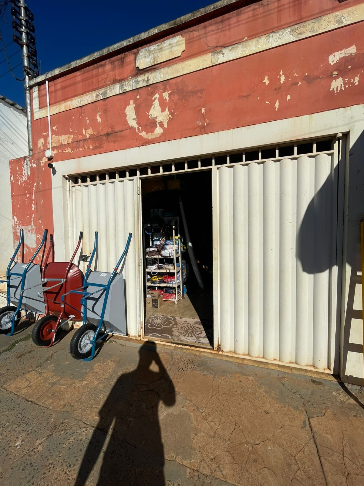
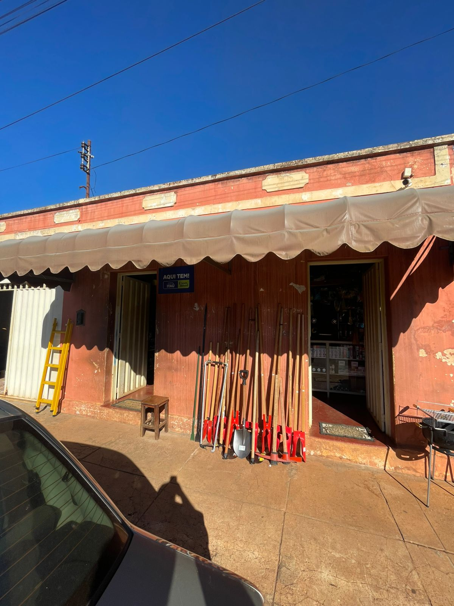
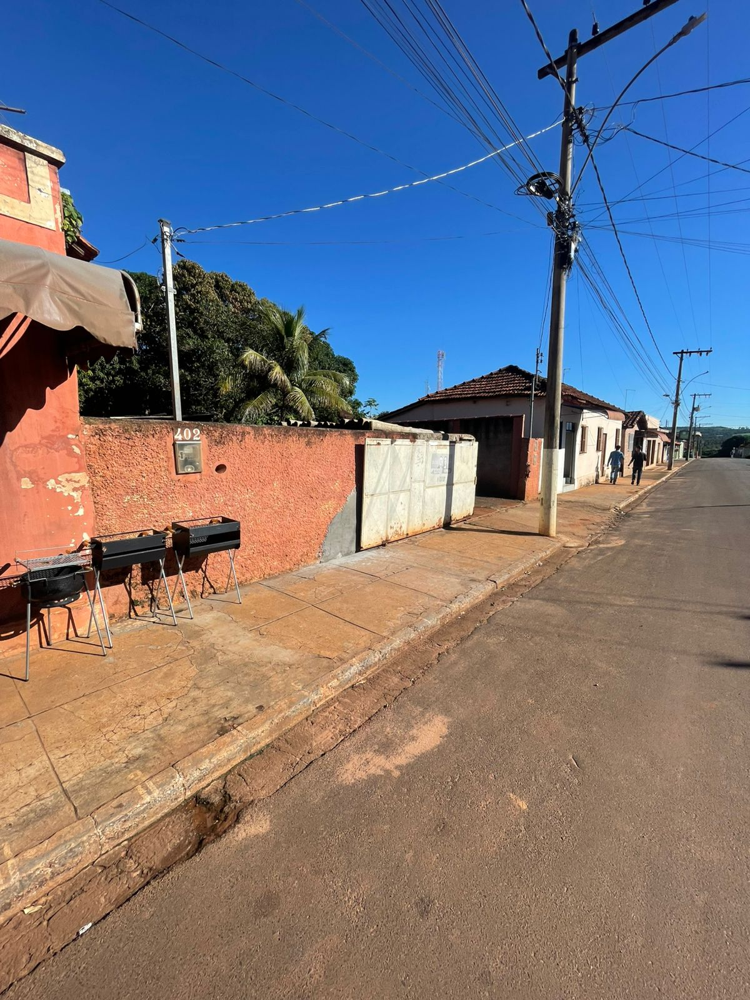

A trajetória da ALC Materiais de Construção tem origem na iniciativa empreendedora de Adalberto Luis da Costa, cuja visão de negócio e determinação foram fundamentais para o desenvolvimento da empresa na região de Veríssimo–MG.
No dia 16 de fevereiro de 2004, Adalberto Luis da Costa deu início às suas atividades comerciais por meio da abertura de uma pequena loja voltada à venda de peças para bicicletas. Naquele momento, o empreendimento apresentava estrutura simples, porém pautada no compromisso com o atendimento de qualidade e na proximidade com os clientes da comunidade local.
Um marco importante no início de sua trajetória foi a realização da primeira compra de mercadorias para revenda. Mesmo diante de recursos financeiros limitados, o empreendedor optou por adquirir produtos a prazo, assumindo riscos significativos em uma decisão caracterizada como uma aposta decisiva para o futuro do negócio. Tal atitude demonstrou coragem, visão e espírito empreendedor, sendo determinante para a continuidade das atividades comerciais.
Com o passar dos anos, o empreendimento passou por um processo gradual de crescimento e diversificação. A ampliação do portfólio de produtos ocorreu de forma estratégica, acompanhando as necessidades da população local e o desenvolvimento da região. Nesse contexto, a empresa deixou de atuar exclusivamente no segmento de peças para bicicletas e passou a incorporar novos produtos, especialmente voltados ao setor da construção civil.
A consolidação dessa transição resultou na transformação do negócio em uma loja de materiais de construção, ampliando significativamente sua atuação no mercado. Atualmente, a ALC Materiais de Construção atende não apenas o município de Veríssimo–MG, mas também cidades vizinhas, destacando-se pela variedade de produtos, qualidade no atendimento e compromisso com seus clientes.
Dessa forma, a história da empresa evidencia a importância do empreendedorismo, da persistência e da capacidade de adaptação às demandas do mercado, fatores que contribuíram para o crescimento e fortalecimento da organização ao longo dos anos.


